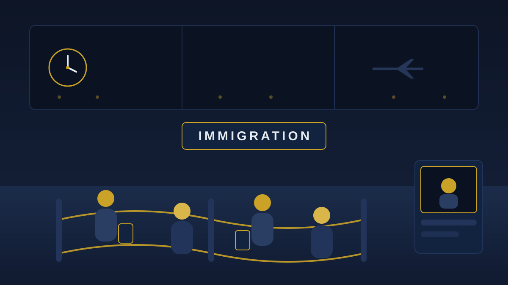

春节对越南机场意味着什么
Tet是越南最大的节日,数亿人次的国内返乡客流集中在节前一周爆发,而国际到达同时迎来中国游客的寒假高峰:
- 国际入境大厅 - SGN高峰可超100分钟,HAN高峰波次90分钟上下,比平时最坏情况还要长。
- 国内航站楼 - 比入境大厅更夸张:新山一和内排的国内出发厅在除夕前一周达到全年峰值,值机和安检都要排长队。
- 除夕当天下午到初一上午 - 出租车和Grab明显变少,落地后的"最后一公里"比平常更难。
最容易出问题的三个环节
- 国际转国内 - 最糟糕的场景:在SGN国际楼落地,然后挤进春运状态的国内航站楼赶飞岘港、顺化或富国岛的航班。春节期间低于2.5小时的衔接都算高风险,见转机攻略。
- 节后离境 - 春节假期结束回程,值机、安检、出境边检全都排长队,预留时间要比平常多。
- 落地后的地面交通 - 除夕和初一打车难、司机少,提前订好接送比到现场排队强。
春节出行清单
- 快速通关提前2-4周订 - 每个预订都要按你的航班指定工作人员,春节机位最先订满。
- 出发前办好越南电子签 - 高峰期任何额外手续窗口都会再排一条队,e-visa最省事。
- 转机留足缓冲 - 春节周内,没有转机陪同的情况下,低于2.5小时的国际转国内衔接都有风险。
- 落地交通提前订 - 酒店接机车或预订好的接送,好过除夕当天在到达厅门口打车。
春节的价格
快速通关在春节基本维持常规定价(从$25起/人,按机场和套餐),部分运营方在除夕和初一初二可能加收节假日费用。真正的限制是人手而不是价格 - 每个预订对应一个按你航班排班的工作人员,订满即止。旺季期间的更多细节见运营方的节假日高峰指南。
常见问题
春节是越南机场最挤的时候吗?
国内航站楼是 - 新山一和内排的国内出发厅在除夕前一周达到全年峰值。国际到达也忙但没那么极端;更大的问题是落地后要转国内航班。
春节快速通关要提前多久订?
高峰窗口(除夕前约10天到除夕后约5天)建议提前2-4周。每个预订都要按航班指定工作人员,春节机位最先订满。
春节越南机场入境排队多久?
SGN国际到达高峰可超过100分钟;HAN高峰波次90分钟上下;国内航站楼的值机和安检队伍比入境更夸张。
除夕当天打车难吗?
难。除夕下午到初一上午出租车和Grab明显变少,建议提前订好接送或酒店接机车。
落地机场攻略:内排(HAN) · 新山一(SGN) · 岘港(DAD)
约15分钟机舱门到出口 - 运营方平均通关时间
≤2小时工作时间内预订确认
从$25起每人 - 按机场和套餐定价
中文服务中文工作人员可全程沟通